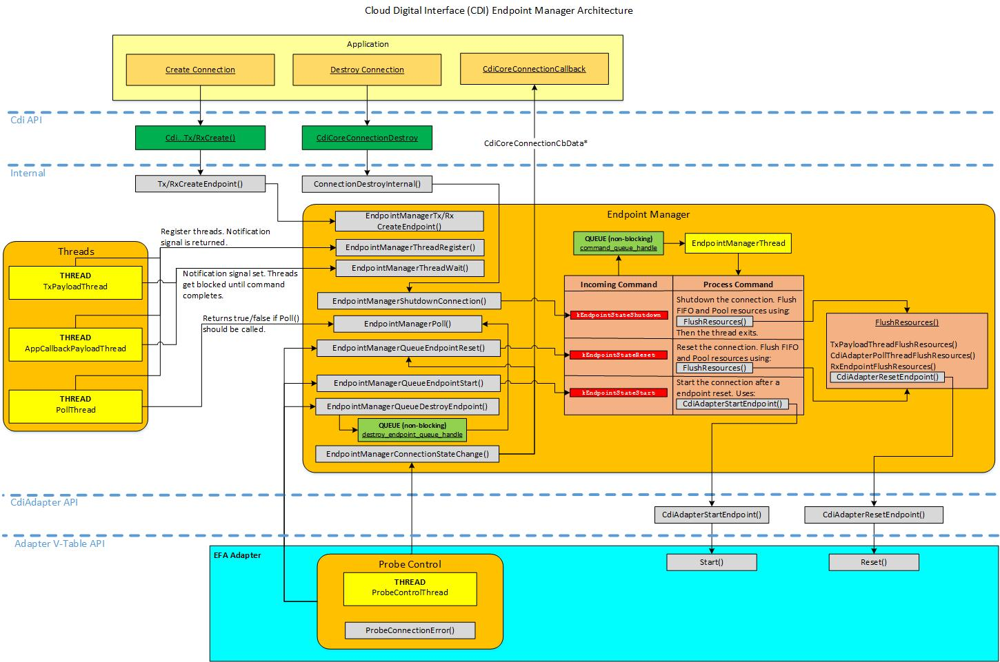

Architecture Overview
In order to coordinate endpoint state changes such as reset, start and shutdown operations, a specific sequence of events must occur. There are many resouces such as queues, memory pools and threads that are used for an endpoint. All threads related to an endpoint must be blocked before any resource changes such as flushing queues or returning used memory pool items to their pool can be made. Once a state change completes, all threads are unblocked and return to their normal running state. The specific steps used are described below:
- All threads related to the connection must register with then Endpoint Manager using EndpointManagerThreadRegister(). This does not include threads related to the probe control interface such as ProbeControlThread(), since it runs all the time (never gets blocked).
- When a request to perform an endpoint state change is made using EndpointManagerQueueEndpointReset(), EndpointManagerQueueEndpointStart() or EndpointManagerShutdownConnection(), the EndpointManagerState::new_command_signal is set. The Poll thread must call EndpointManagerPoll() as part of its normal poll loop to determine if it should perform adapter level polling or not. All other registered threads must monitor this signal and when set, must call EndpointManagerThreadWait(), which blocks the thread.
- After the non-poll registered threads have called EndpointManagerThreadWait(), the endpoint state change is carried out using EndpointManagerThread().
- After the endpoint state change completes, the registered threads that are blocked in EndpointManagerThreadWait() are allowed to continue and calls to EndpointManagerPoll() by the poll thread will return true (can call adapter poll functions). NOTE: In a shutdown condition, the EndpointManagerThread() exits as part of this process.
The diagram shown below provides an overview of the Endpoint Manager architecture.
